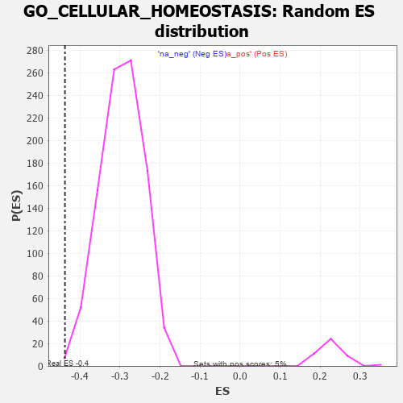

| | | Dataset | 7d |
| Phenotype | NoPhenotypeAvailable |
| Upregulated in class | na_neg |
| GeneSet | GO_CELLULAR_HOMEOSTASIS |
| Enrichment Score (ES) | -0.43775108 |
| Normalized Enrichment Score (NES) | -1.4799657 |
| Nominal p-value | 0.0020942409 |
| FDR q-value | 0.2071937 |
| FWER p-Value | 1.0 |
Table: GSEA Results Summary
 Fig 1: Enrichment plot: GO_CELLULAR_HOMEOSTASIS
Fig 1: Enrichment plot: GO_CELLULAR_HOMEOSTASIS
Profile of the Running ES Score & Positions of GeneSet Members on the Rank Ordered List
| PROBE | GENE SYMBOL | GENE_TITLE | RANK IN GENE LIST | RANK METRIC SCORE | RUNNING ES | CORE ENRICHMENT | | 1 | RAC2 | | | 60 | 2.442 | 0.0143 | No |
| 2 | UBE2K | | | 94 | 1.739 | 0.0257 | No |
| 3 | ADCY8 | | | 124 | 1.418 | 0.0347 | No |
| 4 | CSRP3 | | | 161 | 1.186 | 0.0408 | No |
| 5 | THADA | | | 253 | 0.931 | 0.0375 | No |
| 6 | CLN5 | | | 346 | 0.751 | 0.0324 | No |
| 7 | BAX | | | 387 | 0.711 | 0.0337 | No |
| 8 | LRP1 | | | 470 | 0.648 | 0.0290 | No |
| 9 | RFC2 | | | 488 | 0.635 | 0.0326 | No |
| 10 | SRF | | | 542 | 0.615 | 0.0313 | No |
| 11 | APEX1 | | | 577 | 0.604 | 0.0324 | No |
| 12 | RFC3 | | | 663 | 0.571 | 0.0266 | No |
| 13 | GLRX3 | | | 813 | 0.529 | 0.0122 | No |
| 14 | RFC4 | | | 815 | 0.528 | 0.0168 | No |
| 15 | RPA1 | | | 817 | 0.527 | 0.0214 | No |
| 16 | RPA2 | | | 851 | 0.519 | 0.0219 | No |
| 17 | DEDD2 | | | 999 | 0.484 | 0.0074 | No |
| 18 | MEN1 | | | 1003 | 0.483 | 0.0113 | No |
| 19 | FOXK2 | | | 1081 | 0.467 | 0.0056 | No |
| 20 | P2RY1 | | | 1416 | 0.407 | -0.0336 | No |
| 21 | E2F4 | | | 1501 | 0.390 | -0.0408 | No |
| 22 | SCO1 | | | 1536 | 0.385 | -0.0417 | No |
| 23 | JPH1 | | | 1741 | 0.347 | -0.0648 | No |
| 24 | LRP5 | | | 1769 | 0.342 | -0.0652 | No |
| 25 | COX19 | | | 1807 | 0.336 | -0.0669 | No |
| 26 | GATA4 | | | 1837 | 0.330 | -0.0677 | No |
| 27 | FOXK1 | | | 1859 | 0.326 | -0.0674 | No |
| 28 | SMAD4 | | | 1860 | 0.326 | -0.0645 | No |
| 29 | MCUR1 | | | 1953 | 0.313 | -0.0735 | No |
| 30 | MICU1 | | | 1954 | 0.313 | -0.0707 | No |
| 31 | CCR4 | | | 1959 | 0.312 | -0.0684 | No |
| 32 | BRSK2 | | | 1979 | 0.308 | -0.0681 | No |
| 33 | RAF1 | | | 2011 | 0.303 | -0.0693 | No |
| 34 | ANO6 | | | 2339 | 0.255 | -0.1090 | No |
| 35 | SIN3A | | | 2361 | 0.251 | -0.1095 | No |
| 36 | FEN1 | | | 2446 | 0.237 | -0.1181 | No |
| 37 | BAG3 | | | 2620 | 0.209 | -0.1384 | No |
| 38 | ROGDI | | | 2633 | 0.207 | -0.1381 | No |
| 39 | CUL1 | | | 2735 | 0.193 | -0.1493 | No |
| 40 | PCK2 | | | 2823 | 0.180 | -0.1589 | No |
| 41 | CAND1 | | | 2845 | 0.177 | -0.1600 | No |
| 42 | CLN6 | | | 2847 | 0.177 | -0.1585 | No |
| 43 | WDTC1 | | | 2865 | 0.172 | -0.1592 | No |
| 44 | MTM1 | | | 2893 | 0.168 | -0.1611 | No |
| 45 | ERO1A | | | 2925 | 0.162 | -0.1637 | No |
| 46 | UBE2S | | | 2980 | 0.153 | -0.1692 | No |
| 47 | ANO1 | | | 2982 | 0.152 | -0.1680 | No |
| 48 | ISCU | | | 2989 | 0.151 | -0.1674 | No |
| 49 | TXNL1 | | | 3004 | 0.149 | -0.1678 | No |
| 50 | RTEL1 | | | 3010 | 0.148 | -0.1671 | No |
| 51 | CHP1 | | | 3089 | 0.138 | -0.1759 | No |
| 52 | GPX1 | | | 3109 | 0.135 | -0.1771 | No |
| 53 | PRDX4 | | | 3214 | 0.120 | -0.1894 | No |
| 54 | SMAD3 | | | 3303 | 0.105 | -0.1998 | No |
| 55 | RFC5 | | | 3389 | 0.091 | -0.2099 | No |
| 56 | KCTD7 | | | 3417 | 0.088 | -0.2125 | No |
| 57 | RFC1 | | | 3437 | 0.085 | -0.2142 | No |
| 58 | CDK5 | | | 3480 | 0.080 | -0.2189 | No |
| 59 | PDIA6 | | | 3512 | 0.075 | -0.2222 | No |
| 60 | ABCB7 | | | 3530 | 0.071 | -0.2237 | No |
| 61 | PRDX5 | | | 3547 | 0.068 | -0.2252 | No |
| 62 | GPR18 | | | 3578 | 0.063 | -0.2284 | No |
| 63 | CHERP | | | 3587 | 0.062 | -0.2289 | No |
| 64 | TNS2 | | | 3588 | 0.062 | -0.2284 | No |
| 65 | MAPK3 | | | 3589 | 0.062 | -0.2278 | No |
| 66 | RIC3 | | | 3629 | 0.055 | -0.2323 | No |
| 67 | FIS1 | | | 3654 | 0.051 | -0.2349 | No |
| 68 | SKP1 | | | 3663 | 0.049 | -0.2355 | No |
| 69 | HTR1B | | | 3745 | 0.035 | -0.2456 | No |
| 70 | TMX1 | | | 3942 | 0.004 | -0.2707 | No |
| 71 | IGF1R | | | 3970 | -0.002 | -0.2742 | No |
| 72 | ATG5 | | | 4051 | -0.016 | -0.2843 | No |
| 73 | ABL1 | | | 4125 | -0.027 | -0.2935 | No |
| 74 | PLCE1 | | | 4127 | -0.028 | -0.2933 | No |
| 75 | WNK3 | | | 4153 | -0.034 | -0.2962 | No |
| 76 | PDX1 | | | 4179 | -0.038 | -0.2991 | No |
| 77 | ENY2 | | | 4195 | -0.041 | -0.3007 | No |
| 78 | OPA1 | | | 4330 | -0.065 | -0.3173 | No |
| 79 | TMCO1 | | | 4451 | -0.085 | -0.3319 | No |
| 80 | NEDD8 | | | 4465 | -0.087 | -0.3328 | No |
| 81 | LRRK2 | | | 4467 | -0.087 | -0.3321 | No |
| 82 | JPH3 | | | 4481 | -0.091 | -0.3330 | No |
| 83 | ERP44 | | | 4482 | -0.091 | -0.3322 | No |
| 84 | NPTN | | | 4519 | -0.098 | -0.3359 | No |
| 85 | MICU3 | | | 4571 | -0.110 | -0.3415 | No |
| 86 | CMA1 | | | 4580 | -0.114 | -0.3415 | No |
| 87 | LETM1 | | | 4644 | -0.127 | -0.3484 | No |
| 88 | NMUR2 | | | 4646 | -0.127 | -0.3474 | No |
| 89 | ITPR1 | | | 4661 | -0.130 | -0.3480 | No |
| 90 | CLCN3 | | | 4678 | -0.134 | -0.3489 | No |
| 91 | PDIA3 | | | 4740 | -0.147 | -0.3554 | No |
| 92 | PLCG1 | | | 4770 | -0.151 | -0.3578 | No |
| 93 | RTN4 | | | 4783 | -0.154 | -0.3579 | No |
| 94 | MYO5A | | | 4787 | -0.155 | -0.3569 | No |
| 95 | P2RX4 | | | 4813 | -0.161 | -0.3587 | No |
| 96 | FBXW7 | | | 4816 | -0.161 | -0.3575 | No |
| 97 | TRA2B | | | 4962 | -0.191 | -0.3744 | No |
| 98 | ACKR4 | | | 4981 | -0.194 | -0.3749 | No |
| 99 | DMXL1 | | | 5004 | -0.198 | -0.3760 | No |
| 100 | PDPK1 | | | 5043 | -0.207 | -0.3790 | No |
| 101 | DRD2 | | | 5088 | -0.221 | -0.3826 | No |
| 102 | GPR4 | | | 5219 | -0.250 | -0.3971 | No |
| 103 | KRIT1 | | | 5248 | -0.257 | -0.3984 | No |
| 104 | IDE | | | 5252 | -0.258 | -0.3964 | No |
| 105 | RAB7A | | | 5302 | -0.271 | -0.4003 | No |
| 106 | NPY2R | | | 5331 | -0.281 | -0.4013 | No |
| 107 | ITPR3 | | | 5361 | -0.288 | -0.4025 | No |
| 108 | GRIN1 | | | 5381 | -0.291 | -0.4023 | No |
| 109 | DLG4 | | | 5388 | -0.293 | -0.4004 | No |
| 110 | PRDX3 | | | 5389 | -0.293 | -0.3978 | No |
| 111 | VDR | | | 5517 | -0.325 | -0.4112 | No |
| 112 | SIDT2 | | | 5542 | -0.331 | -0.4113 | No |
| 113 | ABCG2 | | | 5556 | -0.335 | -0.4099 | No |
| 114 | CALCR | | | 5730 | -0.386 | -0.4287 | No |
| 115 | CIB2 | | | 5774 | -0.398 | -0.4306 | No |
| 116 | TRPC6 | | | 5784 | -0.401 | -0.4282 | No |
| 117 | PDIA4 | | | 5803 | -0.406 | -0.4268 | No |
| 118 | ANXA7 | | | 5827 | -0.413 | -0.4260 | No |
| 119 | CDK16 | | | 5869 | -0.425 | -0.4275 | No |
| 120 | DCTN1 | | | 5950 | -0.454 | -0.4337 | Yes |
| 121 | CXCR5 | | | 5954 | -0.456 | -0.4300 | Yes |
| 122 | PTPRN | | | 6007 | -0.474 | -0.4324 | Yes |
| 123 | XBP1 | | | 6011 | -0.475 | -0.4285 | Yes |
| 124 | HVCN1 | | | 6034 | -0.482 | -0.4270 | Yes |
| 125 | TRPC3 | | | 6035 | -0.483 | -0.4226 | Yes |
| 126 | RAC1 | | | 6036 | -0.484 | -0.4182 | Yes |
| 127 | PPT1 | | | 6038 | -0.485 | -0.4140 | Yes |
| 128 | CALR | | | 6077 | -0.499 | -0.4144 | Yes |
| 129 | ABCB6 | | | 6106 | -0.507 | -0.4134 | Yes |
| 130 | STIM1 | | | 6169 | -0.528 | -0.4166 | Yes |
| 131 | ATP7B | | | 6194 | -0.535 | -0.4149 | Yes |
| 132 | RGN | | | 6233 | -0.547 | -0.4148 | Yes |
| 133 | XPR1 | | | 6250 | -0.555 | -0.4119 | Yes |
| 134 | AP3D1 | | | 6261 | -0.558 | -0.4082 | Yes |
| 135 | GALR2 | | | 6355 | -0.599 | -0.4147 | Yes |
| 136 | TRPM4 | | | 6390 | -0.612 | -0.4136 | Yes |
| 137 | PRDX6 | | | 6396 | -0.615 | -0.4087 | Yes |
| 138 | ABCA2 | | | 6433 | -0.634 | -0.4076 | Yes |
| 139 | TRPV4 | | | 6515 | -0.668 | -0.4120 | Yes |
| 140 | FGGY | | | 6517 | -0.669 | -0.4061 | Yes |
| 141 | P2RX5 | | | 6576 | -0.699 | -0.4072 | Yes |
| 142 | CLN3 | | | 6580 | -0.699 | -0.4013 | Yes |
| 143 | ARF1 | | | 6583 | -0.701 | -0.3953 | Yes |
| 144 | PDIA5 | | | 6639 | -0.734 | -0.3957 | Yes |
| 145 | MPC2 | | | 6683 | -0.753 | -0.3945 | Yes |
| 146 | PDIA2 | | | 6762 | -0.792 | -0.3973 | Yes |
| 147 | TRPM8 | | | 6781 | -0.800 | -0.3925 | Yes |
| 148 | PTH1R | | | 6845 | -0.839 | -0.3930 | Yes |
| 149 | HEXB | | | 6894 | -0.864 | -0.3914 | Yes |
| 150 | PIM3 | | | 6964 | -0.914 | -0.3920 | Yes |
| 151 | CCR2 | | | 7003 | -0.939 | -0.3884 | Yes |
| 152 | FBXL5 | | | 7046 | -0.965 | -0.3851 | Yes |
| 153 | GRM5 | | | 7053 | -0.969 | -0.3772 | Yes |
| 154 | CFTR | | | 7143 | -1.030 | -0.3793 | Yes |
| 155 | TMX3 | | | 7158 | -1.040 | -0.3718 | Yes |
| 156 | CNGB1 | | | 7222 | -1.096 | -0.3700 | Yes |
| 157 | ANK2 | | | 7298 | -1.170 | -0.3691 | Yes |
| 158 | GRN | | | 7319 | -1.194 | -0.3609 | Yes |
| 159 | TRPM1 | | | 7324 | -1.197 | -0.3506 | Yes |
| 160 | WDR35 | | | 7357 | -1.225 | -0.3437 | Yes |
| 161 | GRM1 | | | 7404 | -1.272 | -0.3382 | Yes |
| 162 | KCNB1 | | | 7444 | -1.327 | -0.3312 | Yes |
| 163 | VAPB | | | 7482 | -1.378 | -0.3236 | Yes |
| 164 | GRIK2 | | | 7552 | -1.471 | -0.3192 | Yes |
| 165 | CALM1 | | | 7567 | -1.499 | -0.3075 | Yes |
| 166 | TRPV6 | | | 7569 | -1.502 | -0.2941 | Yes |
| 167 | TTPA | | | 7575 | -1.516 | -0.2811 | Yes |
| 168 | TRPA1 | | | 7625 | -1.608 | -0.2729 | Yes |
| 169 | PKD1 | | | 7628 | -1.611 | -0.2587 | Yes |
| 170 | MCU | | | 7644 | -1.637 | -0.2459 | Yes |
| 171 | TRPM2 | | | 7680 | -1.712 | -0.2349 | Yes |
| 172 | RHAG | | | 7701 | -1.769 | -0.2216 | Yes |
| 173 | BOK | | | 7715 | -1.817 | -0.2069 | Yes |
| 174 | P2RY8 | | | 7750 | -1.912 | -0.1940 | Yes |
| 175 | TRPM7 | | | 7761 | -1.936 | -0.1779 | Yes |
| 176 | PDE4D | | | 7764 | -1.944 | -0.1607 | Yes |
| 177 | GRIK5 | | | 7792 | -2.044 | -0.1457 | Yes |
| 178 | PKD2 | | | 7822 | -2.167 | -0.1299 | Yes |
| 179 | GRIA1 | | | 7836 | -2.260 | -0.1113 | Yes |
| 180 | CALM3 | | | 7869 | -2.525 | -0.0926 | Yes |
| 181 | FYN | | | 7881 | -2.622 | -0.0704 | Yes |
| 182 | CAV3 | | | 7896 | -2.739 | -0.0476 | Yes |
| 183 | NPSR1 | | | 7913 | -2.947 | -0.0231 | Yes |
| 184 | ARRB1 | | | 7935 | -3.377 | 0.0046 | Yes |
Table: GSEA details [plain text format]

Fig 2: GO_CELLULAR_HOMEOSTASIS: Random ES distribution
Gene set null distribution of ES for GO_CELLULAR_HOMEOSTASIS